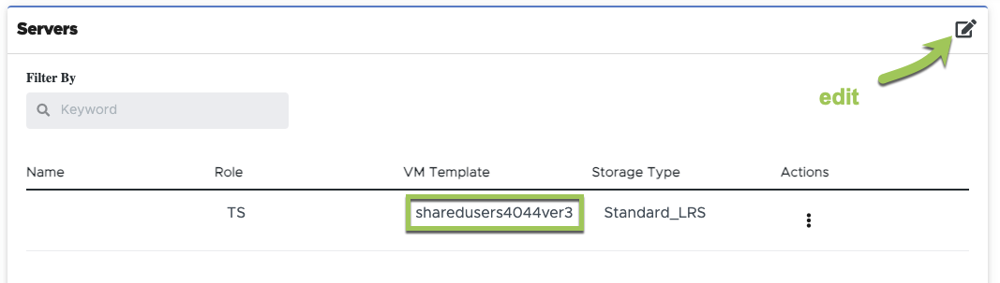

Richiedi modifiche alla documentazione
Richiedi modifiche alla documentazione Modifica questa pagina
Modifica questa pagina Scopri come collaborare
Scopri come collaborareAggiornare e implementare le immagini delle macchine virtuali
Collaboratori
Application Delivery Methodology
Gli utenti possono accedere a qualsiasi applicazione installata sulla macchina virtuale host della sessione (SHVM) in cui è in esecuzione la sessione utente.
Gli utenti vengono assegnati a un pool di SHVM ("pool di host") in base alla loro appartenenza a un gruppo di utenti. Ogni SHVM in quel pool di host si basa sulla stessa immagine della macchina virtuale, ha le stesse applicazioni e viene eseguito sulle stesse risorse della macchina virtuale. Ogni volta che un utente si connette, viene assegnato a SHVM nel proprio pool di host con il minor numero di sessioni utente correnti.
Aggiungendo o rimuovendo applicazioni da ogni SHVM nel pool di host, l’amministratore di VDMS può controllare a quali applicazioni gli utenti di VDMS possono accedere.
L’aggiunta (o la rimozione) di applicazioni da ogni SHVM può essere eseguita direttamente su ogni SHVM o su una singola immagine della VM, che a sua volta può essere implementata in tutti gli SHVM nel pool di host.
Questo articolo illustra la gestione delle immagini delle macchine virtuali. L’installazione diretta delle applicazioni sulle SHVM è trattata nella "questo articolo".
Aggiornamento dell’immagine della macchina virtuale
Il metodo consigliato per aggiungere (o rimuovere) applicazioni a SHVM consiste nella modifica dell’immagine VM assegnata al pool di host. Una volta personalizzata e convalidata l’immagine della macchina virtuale, il team di supporto di VDMS può implementarla su richiesta in tutti gli SHVM del pool di host.
-
Accedere a "Provisioning Collections" all’interno dell’implementazione nel portale VDS
-
Fare clic sulla raccolta di provisioning associata al pool di host che si desidera aggiornare.

-
Prendere nota del nome "modello VM" nella sezione "Server".


-
-
Modificare il modello del server assicurandosi che il modello di origine sia il modello di macchina virtuale annotato al punto 2.a. sopra. Fare clic su "continua"


|
Non modificare queste impostazioni: 1. Type (tipo) = VDI 2. Share Drive = vuoto 3. Cache minima = 0 4. Unità dati = deselezionato 5. Storage Type (tipo di storage) = Standard_LRS |
-
L’automazione VDMS crea ora una macchina virtuale temporanea in Azure, il nome della macchina sarà CWT n.. La creazione di questa macchina virtuale potrebbe richiedere 25 minuti. Una volta completato il processo, lo stato passa a "Pending" (in sospeso)
-
Nota: Questa macchina virtuale verrà eseguita fino al completamento del processo di personalizzazione, pertanto è importante creare, personalizzare e convalidare la macchina virtuale entro uno o due giorni.
-
-
Una volta che la macchina virtuale temporanea è pronta, è possibile accedere alla macchina virtuale modificando Provisioning Collection e facendo clic su "Connect" (Connetti) sul server.
-
Quando vengono richieste le credenziali, le credenziali di amministratore del dominio possono essere generate da qualsiasi amministratore VDMS con diritti "approvatore PAM".
-
-
Una volta convalidata l’immagine della macchina virtuale, contattare il team di supporto VDMS per pianificare un aggiornamento dell’immagine.
-
Il team costruirà nuovi host di sessione in base alla nuova immagine.
-
Se necessario, coordinare il tempo necessario per testare i nuovi host prima di reindirizzare i nuovi utenti ai nuovi host.
-
-
Una volta pronti, il team di supporto reindirizzerà tutte le nuove sessioni utente ai nuovi host. I vecchi host verranno arrestati quando non sono connessi utenti. Queste vecchie macchine virtuali rimarranno in uno stato disallocato per il warm failover, ma verranno eliminate automaticamente dopo 7 giorni.
Modifica diretta degli SHVM
Le modifiche possono essere apportate direttamente sugli SHVM manualmente o tramite qualsiasi tool di automazione disponibile. Ulteriori informazioni sono disponibili in "questo articolo".
Quando si apportano modifiche direttamente alle SHVM in un pool di host, è fondamentale che ciascuna SHVM rimanga configurata nello stesso modo, altrimenti gli utenti potrebbero avere esperienze non coerenti con la connessione a SHVM differenti.

|
Per impostazione predefinita, il backup dei singoli SHVM non viene eseguito perché in genere non dispongono di dati univoci e si basano su un’immagine VM standardizzata. Se si eseguono personalizzazioni direttamente sulle SHVM, contattare il supporto per applicare una policy di backup a una delle SHVM nel pool di host. |
Risoluzione dei problemi di Sysprep
La funzione "Validate" dell’immagine VDMS utilizza l’utility Sysprep di Microsoft. Quando la convalida non riesce, il responsabile più comune è un errore di Sysprep. Per risolvere i problemi, avviare il file di log Sysprep che si trova sulla macchina virtuale CWT nel percorso C: Windows System setupact.log